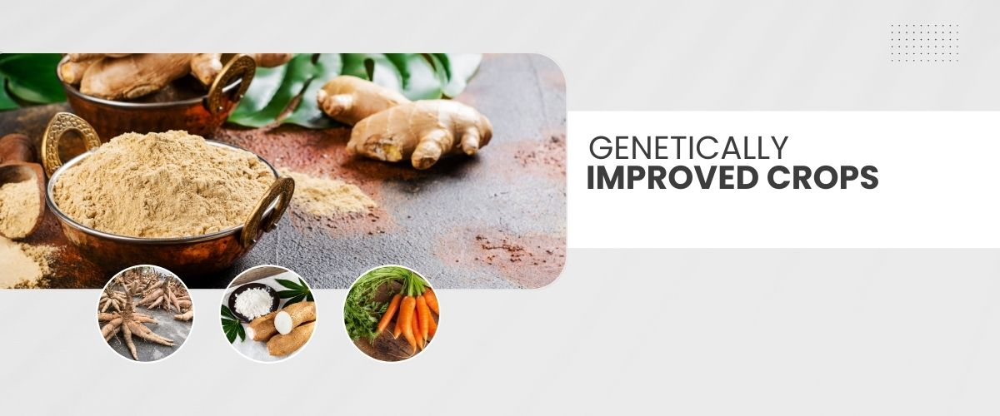
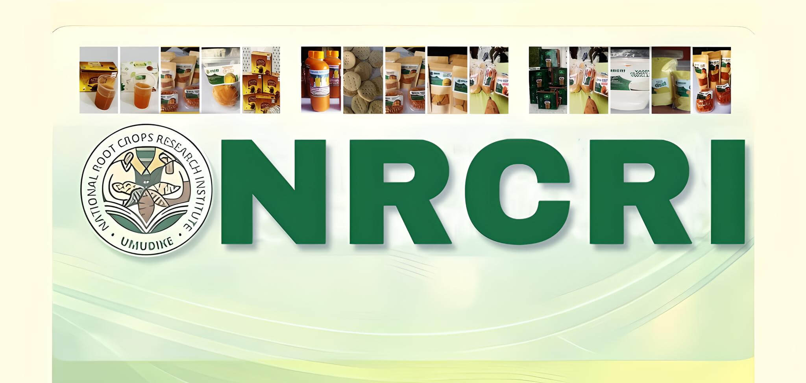
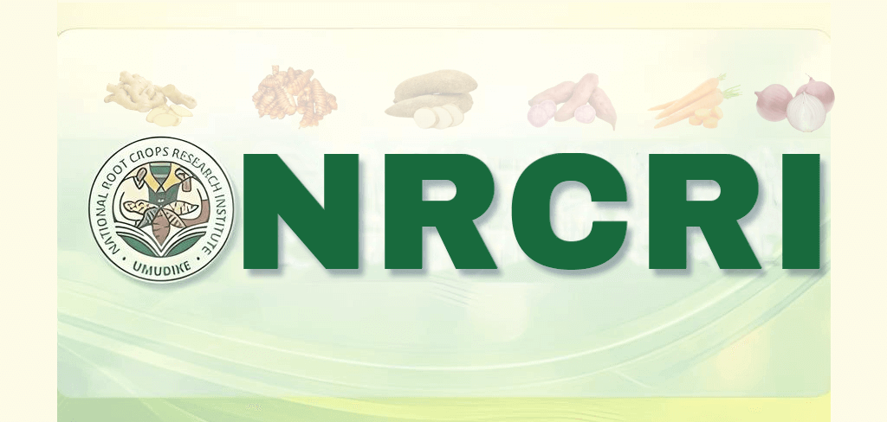

Delivering the Roots of Prosperity

Delivering the roots of Prosperity
The Pursuit of Agricultural Excellence through Science

Delivering the Roots of Prosperity
Delivering the Roots of Prosperity
3 / 3

The pursuit of Agricultural Excellence Through Science